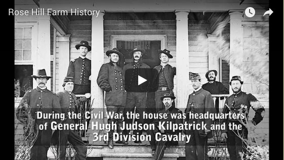

Rose Hill was originally built by Martin Nalle (1777-1843) in the first decades of the 18th century. The exact dates are unclear, but the construction techniques including the hand split sub-plaster lathwork suggest that it was before the 1820s.
Oral histories from the family recollect that the "Old Hall" was the first structure to be erected around 1820. The Nalle family lived in this one story, one room, frame building while the main house was constructed over a period of about 7 years.
The mansion house is a 2½ frame structure with a back wing and dormer windows an has two large chimneys on either end. It has a full basement with subterranean masonry walls of local stone and brick believed to have been fired on site and composed of local red clay quarried somewhere on adjacent property.
Martin and Eleanor Nalle had twelve children. Martin was both a plantation owner and business man who also owned Nalle's Grist Mill on nearbyMountain Run. Eleanor died in 1826 and was first to be buried in the Nalle cemetary located to the north of the main house. Martin died in 1843. The "nalle cemetary" contains at least 16 graves and was actively used by the Nalle family up until the late 1930s. In 1853, Phillip Pendleton Nalle (1816 -1 1907) also buried at Rose Hill sold the property to his business partner Alfred Lomax Ashby before moving to Greenville Mansion, which he built several miles south of Rose Hill.
Mary Jan Asby (1842-1904) was the daughter of Alfred Lomax Ashby and Mary Ellen jones. in November 1868 Mary Jane married Thomas Rosser Covington (1845-1912). He was a veteran of the 9th Virginia Calvary and was born at Dragon Hill plantation in Essex county Virginia. Mary Jane and Thomas Rosser had five children, Mary Eleanor Covington (Mamie), Walter Gregory Covington, Alfred Lomax Ashby Covington, John Austin Covington, and Irene Covington (see family lineage). john Austin Covington (1881-1956) had three children, Alfred Broaddus Covington (1910-1993), Carl Ashby Covington (1914-2000), and Mamie Eleanor Covington Wells (1924-1997).
Not much is known about the events ar Rose Hill between 1853 and the Civil War, but it is known that slave labor based plantation activities continued and no discernable architectural change occurred. In addition to tobacco an wheat, the property was used to raise horses making it a useful site for later occupation by the Union Calvary forces of General Hugh Judson Kilpatrick's Third Division in 1863-1864.
Brick fragments artifacts and oral memories suggest that the slave quarters were located somewhere to the southwest of the main house below the current barn. Oral recollections also suggest that several of the former slaves remained to live on Rose Hill after the War and they are buried on the property in unmarked sites.
Culpeper County occupied a strategic location between the Rappahannock River to the north and the Rapidan River to the south. Through the county ran the important Orange Alexandria railroad (now Southern Railroad). The country side along this rail line was witness to numerous armed engagements throughout the Civil War. The two most important battles fought in Culpeper County were Cedar Mountain (August 1862), and Brandy Station (June 1863) which was the largest Cavalry battle ever fought in North America.
The County was occupied by armies of both the North and the South at various times. It was headquarters to Union General John Pope in 1862, the Robert E. Lee in 1863, just prior to the Gettysburg Campaign, and finally in the winter of 1863-1864 was headquarters to General George Meade and late Ulysses S. Grant, when over 100,000 Union troops made it their winter encampment prior to the Wilderness Campaign in the spring of 1864.
It was during these years that Rose hil and the ASby family was witness to many of these events. Battle damage is today still visible in the attic and front porch of the main house. It is unclear exactly when this damage occurred, but a significant series of Calvary engagements took place in the vicinity on September 13th 1863. During the action Confederate forces of the 11th Virginia Cavalry commanded by Col. Lunsford Lomax and supported by Col. R.L.T. Beall's 9th Virginia Calvary, were pushed back west by Union forces under General Judson Kilpatrick and George Armstrong Custer.
In 1938 newspaper article about Rose Hill suggests that the house was shelled by a Federal battery hoping to get at Confederate soldiers hidden in a "holly planting" just to the west of the main house.
Shortly thereafter Rose hill was made the winter Headquarters of the Third Division U.S. Calvary under Brig. General Hugh Judson Kilpatrick. Stories passed down through the years recount some of the experience of the occupation.

Before the Union troops arived the family was worried that they would be stripped of food and so hid numerous hams underneath a large dining room table, which the then covered with wooden slats. The family was forced to move into the basement while General Kilpatrick and his staff requisitioned the more comfortable upper storied of the house. Many times the family heard the soldiers complain of how heavy "that table" was as they moved it around never realizing what was hidden underneath.
Don and John's Grandfather John Austin recalled from his parents that General Kilpatrick treated the family with courtesy and kindness even supplying the with food from his own table on occasion. This is at variance, however with a late post war letter dated (1902) from a Capt. Aaron Levy of the U.S. Signal Corps who was also stationed at Rose Hill during the occupation. In that letter he offers apologies to Miss Ashby for the poor treatment which he felt they endured under General Kilpatrick, including being denied food at one point.
It was during this time at Rose Hill that plans were made for General Kilpatrick and his second in command Col Ulrich Dahlgren to launch a Calvary raid on Richmond. The ambitious and ill fated plan was to free the Union prisoners of war impounded on Bell Isle in the James River and in Libby Prison at Richmond. They also planned to possibly capture and kill members of the Confederate government of Jefferson Davis.
During that time of occupation and planning, many Washington notables including Senators and Vice President Hannibal Hamlin were entertained as guests of General Kilpatrick at Rose Hill. There is an amusing account of some of the escapades surrounding the social activities at Rose Hill which are detailed in Virgil Carrington Jones book "Eight Hours Before Richmond".
It was later in the War after the occupying Union forces had vacated the home that a young Confederate fo the 9th Virginia Calvary rode up to the house to ask for food. Young Mary jane Ashby had just baked some fresh biscuits and had dumped them "hot" into Thomas Rosser Covington's haversack. He later returned after the War to woo and marry Miss Ashby in 1868 and raise a family at Rose Hill.
It can be noted that Col Dahlgren's part of the ill fated Richmond raid met with disaster when he was killed near King William Court House ambushed by the 9th Virginia Calvary.
We know very little about the time immediately following the Union occupation and the subsequent post War period. Several stories of the time have been handed down by word of mouth, but the most interesting for the family is how Corporal T.R. Covington happened to make the acquaintance of mary Jane Ashby.
It was late int he War when a Confederate soldier rode up to one of the windows of the house and asked for food. Mary Jane had just baked a pan of fresh biscuits and dumped them "hot" into the itinerant soldier's haversack. He returned after the war to marry her in 1868. This story is recounted briefly in a 1938 news paper article about Rose Hill in the Culpeper Star Exponent.
Other more apocryphal stories recount only fragments of information, such as how some silver and other valuables were buried and hidden in the "flats", an area of woods near the Rapidan River. They were not recovered until years later and then only because a loyal former slave recalled their location and assisted the family in retrieving them.
Another account recalls how several former slaves never left the premises and lived out thier lives and were eventually buried somewhere on the property. The veracity of this is suspect since Eleanor Covington Wells recalls the story from her father John Austin while Alfred Broaddus Covington denied he ever heard such a story.
Certainly it can be reliably inferred that financial circumstances during the reconstruction period were tenuous as was widely experienced throughout the South. A long letter sent to the family by Thomas Rosser Covington dated February 17th 1908 is the most complete account that we have of his life before and after the Civil War. It comprised 90 hand written pages which Betty Jean (Covington) Vera and her sister Alice have assiduously transcribed. (See attachment)
T.R. Covington and Mary Jane Ashby together had 5 children all of whom reached adulthood.
- Mary Eleanor Covington (Mamie) b. September 6th 1869
- Walter Gregory Covington b. November 7th 1872
- Alfred Lomax Ashby Covington b. October 5th 1876
- John Austin Covington b. May 20th 1881
- Irene Thompson Covington b. January 30th 1887
The T.R. Covington family managed to raise and educate all five childen and john Austin eventually bought Rose Hill Farm from the others.
John Austin married Lucy Virginia Miller in November 1904. She die a month later of "Consumption" (tuberculosis).
He then remarried Irene Haile Broaddus of King and Queen County Virginia February 25th 1909 and had three children.
- Alfred Broaddus Covington b. February 5th 1910
- Carl Ashby Covington b. november 4th 1914
- Mamie Eleanor Covington (Wells) b. October 19th 1974
Sometime in 1909 the newly weds John and Irene were visited by Captain Theodore F. Northrup, who had been among the occupying Unmion forces under General Kilpatrick in 1963-1864. According to oral accounts John Austin Covington hasted him at Rose hill and toured him by horse and buggy to many of the previous battle sites where Northrup had fought. Owing to the residual bad feelings, particularly in the Shenandoah Valley, Mr. Covington told people that Northrup was a cousin and not a former Union Soldier. Later Captain Northrup gave to John and Irene a late wedding gift of a bone handled carving set now in the possession of John Ashby Covington.
A letter to John Austin from T.E. Northrup dated June 3rd 1912 offers condolences on the death of the "old soldier" T.R. Covington earlier that year. It goes on to discuss John Austin's request for help with a lone on the farm, presumably to "refinance" and reflects the on going financial travails which would burden the family on into the 1930s.
John Austin Covington remained at Rose Hill as a farmer with his two small children during the First World War. The foundations of the Old Ice House and the still existing barn are testament to Rose Hill's principal role as a small dairy farm which shipped its fresh produce by rail rode out fo Brandy Station to Washington DC. Income was supplemented with cash crops and livestock such as wheat, hogs, chickens and sheep, like so many small family farms of the era. Everything was done by horse and by hand as the fist tractor was not purchased until 1947.
No modern historical event left such a depp impression on 20th Century America, as did The Great Depression. Such was the case with John Austin's family at Rose Hill.
The Stock Market Crash in October 1929 was not immediately felt until the collapse of commodity prices later that year. This was compounded many times over by the Great Drought of 1930. Carl recalled for us that it rained heavily on a late April weekend while some of the Broaddus family were visiting and then did not rain again until February 1931. Crops dried up as did wells and ponds. The family resorted to hauling water from the spring located in the southwest corner of Rose Hill. It remained the only source of potable water for miles around. Only recently has it gone dry as a result of the stone quarry to the west of the farm, which is now cut below the water table.
Immature corn was cut for forage, grazing land and hay fields dried up, but the worst catastrophe was when the wheat crop was decimated by the fungal disease smut. In those days wheat was first harvested by the farmer and then someone brought a thrashing machine from farm to fam to separate and bag the grain. Carl recalled, that as soon as the process began a great black cloud of dust and mold rose over the fields and it was immediately evident that the whole crop was affected.
Eleanor recalls that her father, John came up to the house in tears holding out a hnad full of the blackened grain and saying to Irene "We're ruined; it's not worth 10 cents a bushel".
Debt loomed and many farms were foreclosed. To raise cash, family furniture was sold including the beautiful walnut table under which the "hams" were hidden from the Yankees. In so doing foreclosure was spared for a time and they continued to eke out a living from the farm.
It was during these years that Carl began to work weekends for Mr. Will Walker's Dry Goods Store in Stevenburg for 75 cents a day. We heard many stories of those experiences with Mr. Walker and of the local clientele who frequented that small town emporium.
Broaddus was grown and had left to seek work in Alexandria. One job included working as a rod man surveying the route now known as the Mt. Vernon Parkway along the Potomac River.
Carl, who was the more scholastically inclined of the two brothers, out distanced the available teaching resources of Brandy High School and was taught trigonometry by the local surveyor, Mr. Boldridge. He later qualified for a scholarship to George Washington University where he studied Mechanical and Aeronautical Engineering.
Despite the efforts of the New Deal the Depression continued as Carl worked his way through school sending money home when he could. Just before returning to complete his last year of college one of his mothers sisters while visiting Rose Hill went through his personal belongings, found his checkbook and demanded that he use his remaining balance to pay back a debt his father John Austin owed to her father "Big Daddy" Broaddus.
Lacking the funds to complete his last year of college he asked the Dean of the Engineering School to help him gain admission to the General Electric post graduate Engineering test course in Schenectady, New York. To the surprise and chagrin of a skeptical faculty, he finished number two in the class and gained his Engineering certification and a good job in the electric generating division of the General Electric company. With his now well paying job he was finally able to clear the debt which had plagued Rose Hill and the family for so many years.
As WWII approached and the US began to rearm, Carl moved back to Washington DC to work in the aeronautical design division of the Navy Department. The day after Pearl Harbor he was assigned to work on the design of a new fighter, the F6F Hellcat. From there he went on to have a distinguished career in aircraft design and development into the 1980s. In addition he worked out of his home and created numerous inventions for which he held several lucrative patents. His drafting board and papers are on display upstairs at Rose Hill. Broaddus enlisted and served as a waste gunner in a B24 flying first out of North Africa, the Italy. He later flew with aerial reconnaissance and has left us with a scrap book collection of unique War era photos.
During this time Eleanor received her Nursing Degree from University of Virginia and later married a Pacific War Navy Veteran, Donald C. Wells. The were married at Rose Hill Farm.
In the 1950s dairy farming operation at Rose Hill was terminated as John Austin and Irene got older. Gradually farming operations ceased all together and the farm was put in the Soil Bank Program for conservation. First Broaddus then Don Wells and John Covington converted a large part of the land into a wild life preserve in cooperation with Quail Unlimited, and the Federal Wildlife Habitat Improvement Program.